Multiresolution Analysis and Approximation of Audio Signal: the Daubechies 2 wavelet
Here we show a finite discrete signal and its multi-resolution analysis of level p=1,2,3,4,5,6,7,8,9.10 based on the Daubechies 2 wavelet. A sigal is an element of finite dimensional vector space of real numbers, which is decomposed as a direct sum of subspaces the form
R
N
= (level p approximation) + (level p detail) + ... + (level 2 detail) + (level 1 detail).
Higher level subspace consist of elements of lower frequcny, and the approximation is the lowest frequency part.
Level 7 Decomposition
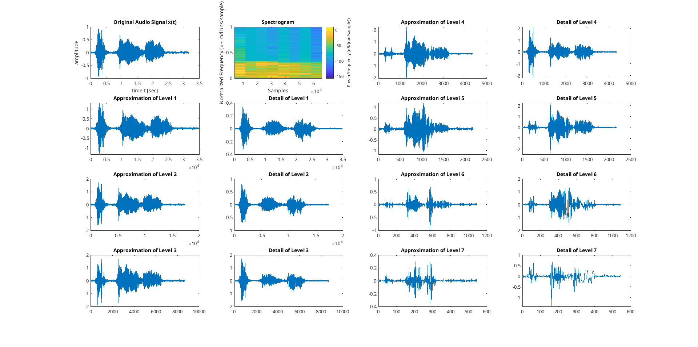
Audio Signal
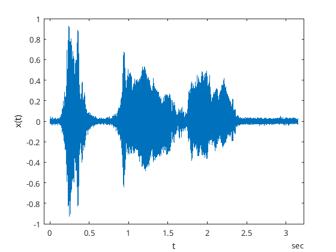
Basic Information
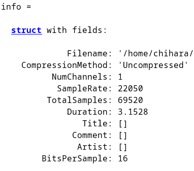
Level 1 Approximation
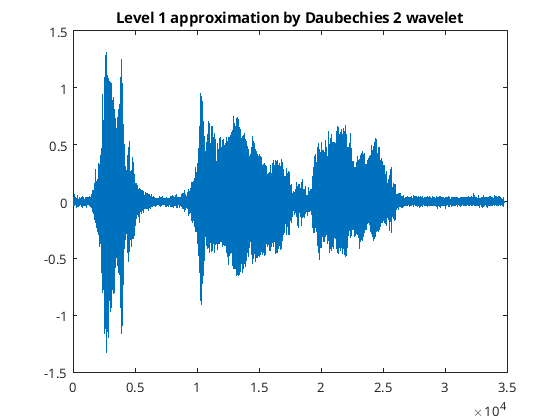
Level 1 Detail
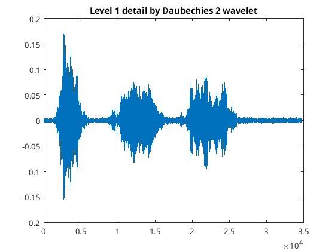
Level 2 Approximation
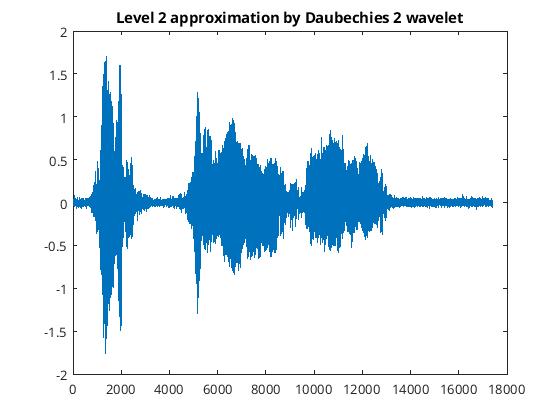
Level 2 Detail
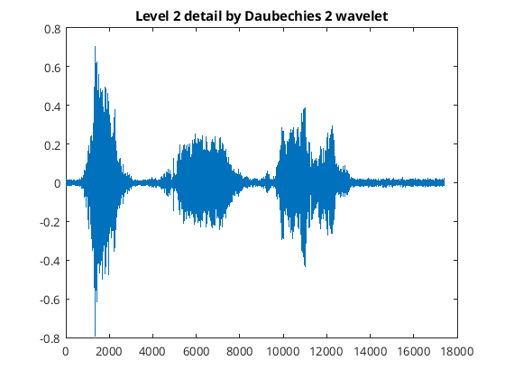
Level 3 Approximation
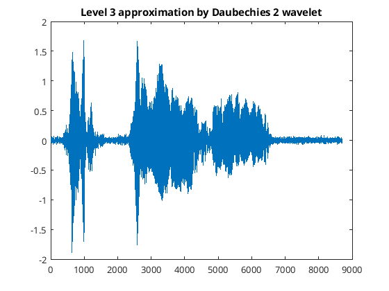
Level 3 Detail
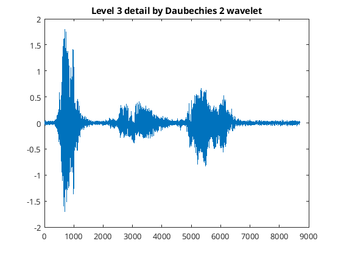
Level 4 Approximation
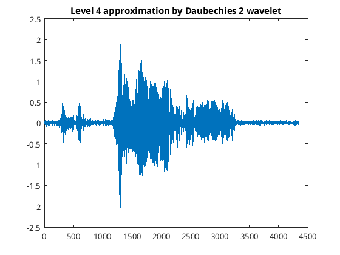
Level 4 Detail
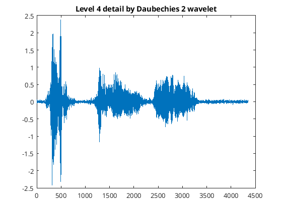
Level 5 Approximation
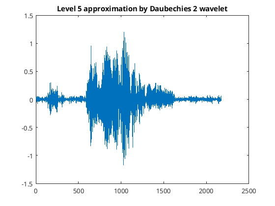
Level 5 Detail
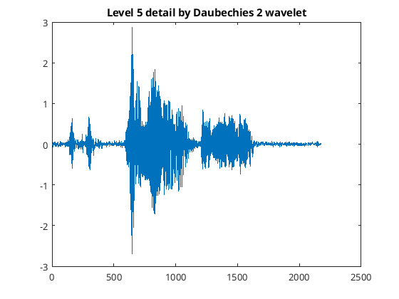
Level 6 Approximation
Level 6 Detail
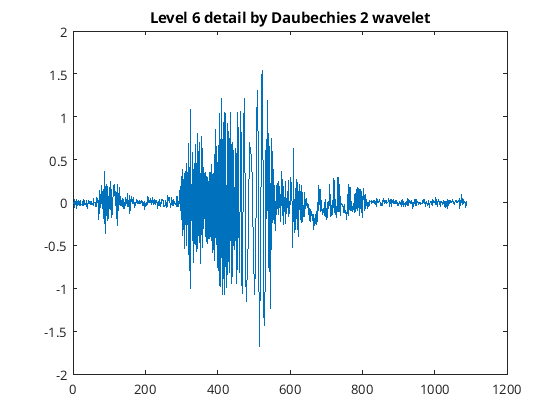
Level 7 Approximation
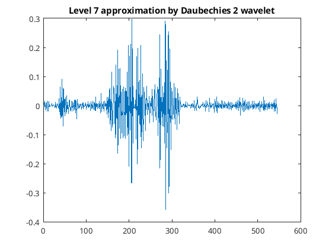
Level 7 Detail
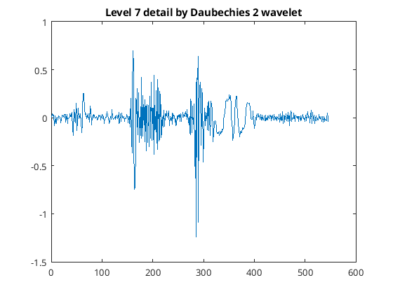
Level 8 Approximation
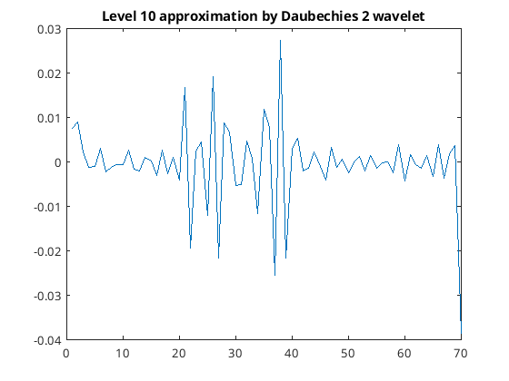
Level 8 Detail
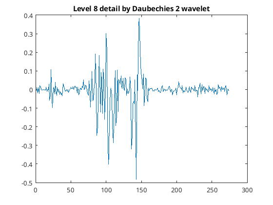
Level 9 Approximation
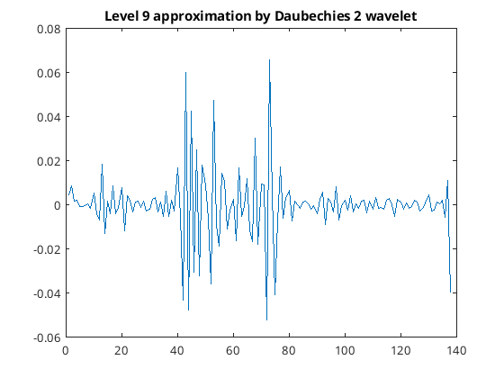
Level 9 Detail
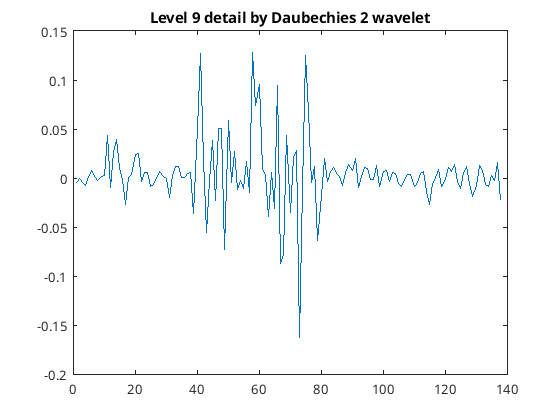
Level 10 Approximation
Level 10 Detail
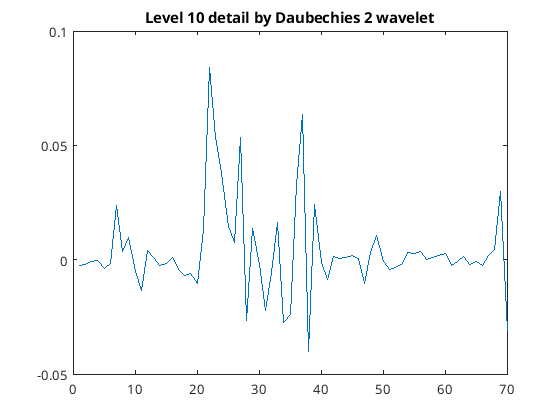